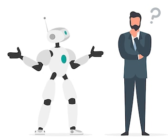

We Design BrainWare
for Robotics and
Autonomous Devices
The Problem
 The systematic failure of current AI approaches to create provably intelligent systems.
The Solution
HALS (Human-friendly Autonomous Learning Systems) is a revolutionary approach to AI that mimics human learning processes. By integrating sensorimotor experiences, HALS enables machines to learn and adapt in real-time, just like humans do.
How it Works
HALS combines advanced machine learning algorithms with a unique architecture that allows for continuous learning from sensory inputs. This system can process visual, auditory, and tactile data, enabling it to understand and interact with its environment in a human-like manner.
How it Appears
HALS is designed to be user-friendly and intuitive. Its interface is visually appealing, with a clean layout and easy navigation. The system provides real-time feedback and insights, making it accessible for users of all technical levels.
Contacts
For more information about HALS, please contact us at:
Srgg: email